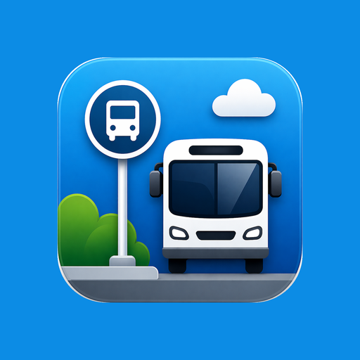
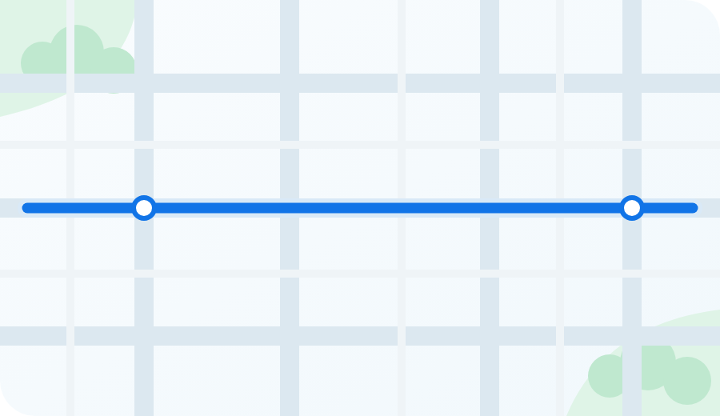

MyBarrie TransitAUTOMATIC DETOUR DETECTION
See likely detours.
Avoid skipped stops.
Powered by live bus movement.

Likely detour detected
Route change identified from live bus movement
LIVE
Checking live routes and service alerts...
65%
Standalone design preview — the Android app uses the same bundled PNG artwork.